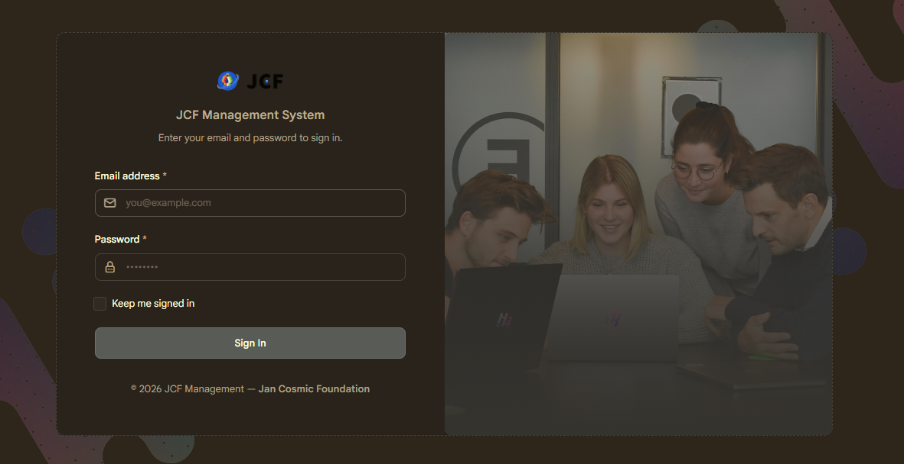

JCF Foundation Website and CMS
Client
JCF Foundation
Role
Backend Developer
Duration
Jan 2024 – Apr 2025

The Problem
When I first sat down with the JCF Foundation team, their operations were a mess of spreadsheets, WhatsApp messages, and manual bank transfers. Appointment bookings were tracked in a shared Google Sheet that three different people were editing simultaneously. Donation records were scattered across email threads. Nobody had a clear picture of what money had come in, what was committed, and what had been spent - and this was a foundation processing international donations.
The real risk wasn't just inefficiency. It was trust. When donors from outside Ghana send money to a foundation, they expect accountability and transparency. That's what this project was about.
What I Built
I built a content management system that brought their operation into one place. The core of it was an appointment booking module - staff could schedule, reschedule, and track appointments with a proper audit trail.
The harder part was the financial layer. Integrating a payment system capable of processing international donations, which meant dealing with currency handling, transaction records, and reconciliation.
The Hard Part Nobody Talks About
International payment integration in Ghana is not straightforward. Payment gateways behave differently depending on the origin of the transaction, and error handling when a cross-border payment fails needs to be explicit. I had to map out every failure mode and build specific responses for each one.
Outcome
The foundation moved off spreadsheets entirely within the first month. GHC 800,000+ processed through the payment system with full transaction logs. The appointment module eliminated double-bookings. And the automated tests caught three significant bugs during a feature update that would have hit production undetected under the old approach.
More than the numbers - the foundation now had a system they could show to international donors as evidence of operational maturity.